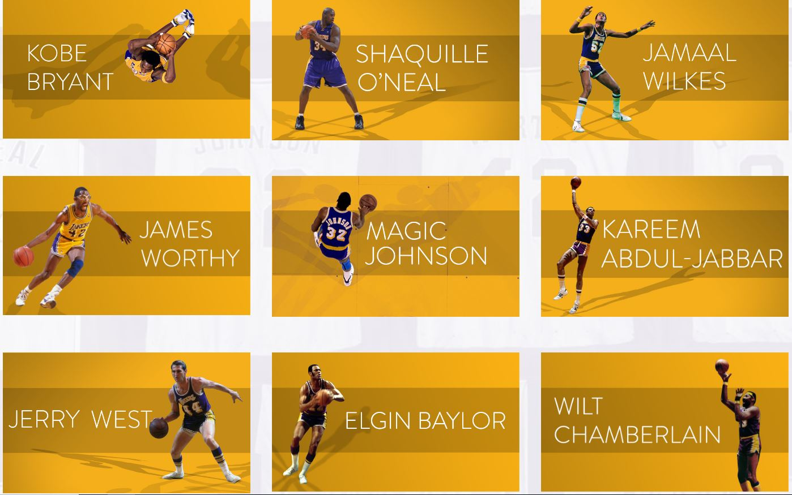
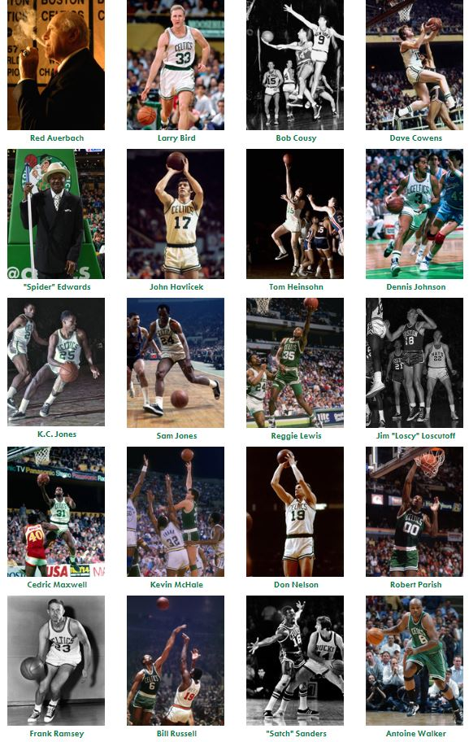

Who's Better?
Since, we reviewed all the history and statistics of the past and the present the question remasins: Who's better? Both teams are power houses that all have a different face that represenst teams for each season or era. For example, Kobe Bryant was the face of the Lakers organization for 20 yeras, and the Celtics had Antoine Walker to be their face of their franchise from 1996-2004 and from 2004-2005.
Comparing the legends brings the real; debate. The Lakers known for their superstars like Magic Johnson, Kareen Abdul-Jabar, James Worthy, Jerry West, and Kobe Bryant. They all brought at leasr 1 or more rings for the Lakers. There superstrs brought the besta dn the woorts to basketball. While, many hated on them for being excellent for their love of the game and how they played it. Others lioved every single secondf they spent on and off the court.

